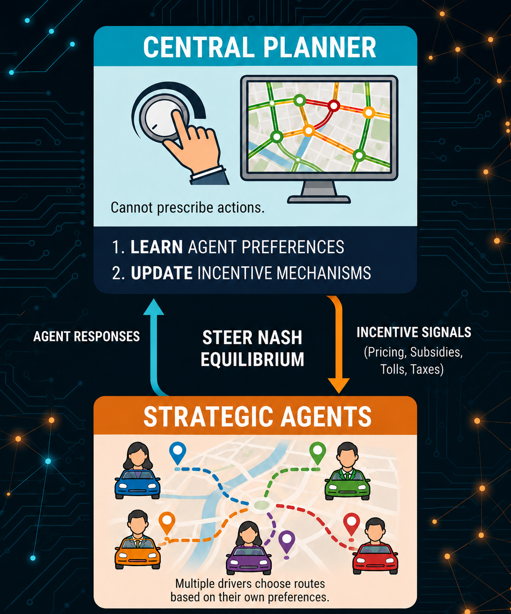
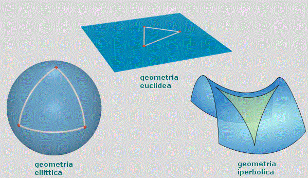
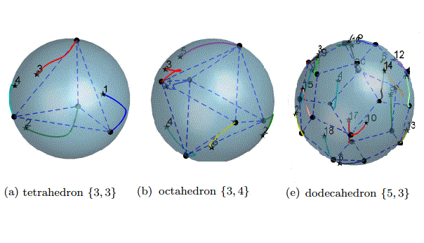
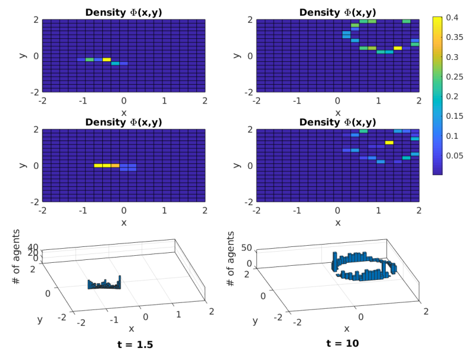

Research
Research Interests
My research interests lie broadly in control and optimization, incentive design, large-scale systems, and risk-averse/safe learning. Specific topics that I have been dedicated to include:
- Incentive design and games.
- Control and optimization on manifolds and networks.
- Moment-based modeling and control of large-scale systems.
- Robust and safe learning.
Incentive Design for Strategic Agents
Modern infrastructure often interacts with strategic agents. Electricity consumers decide when to use power, drivers choose routes, and data owners determine what information to contribute. In each case, a central planner cannot directly prescribe the agents' actions but instead influences them through incentive signals such as pricing, subsidies, tolls, and taxes.
Our work studies incentive design as a feedback loop. Planners observe strategic agent responses, learn about their preferences, and update incentive mechanisms to steer the Nash equilibrium toward desired collective objectives such as welfare, fairness, or safety. The goal is not only to compute incentives when the model is known, but also to adapt incentives online under information asymmetry and provide performance guarantees.
This creates a natural connection between control, optimization, online learning, game theory, and multi-agent systems.

Control on Manifolds & Intrinsic Formation
Control and optimization on manifolds in a distributed manner have become timely issues in large-scale systems. By identifying and exploiting geometric structures in high-dimensional data and states, one can reduce the complexity of large-scale problems and make distributed algorithms more informationally efficient and computationally tractable.
We employed this line of work on differentiable manifolds, particularly the n-sphere Sn and the Lie group SO(3), which appear in many rigid-body attitude applications. Based on distributed algorithms for state consensus, or distributed minimization of deviations between individuals, in non-Euclidean spaces, we further investigated formation problems for multiple rigid bodies.
Unlike many studies in formation control, this formation mechanism does not require a pre-given shape reference signal in the control protocol. Instead, the desired formation patterns are constructed based on the geometric properties of the configuration space and the designed connection topology. This type of formation is referred to as intrinsic formation control.
This research is both theoretically and practically significant for applications such as satellite constellation maneuvering, drone cluster coordination, and multi-robot systems control.


Modeling & Control of Large-Scale Systems by Moments
Large-scale networked systems typically consist of a large number of connected agents, often too many to model individually. Moreover, in many cases the agents are exchangeable, and distinguishing each individual may not even be desirable.
We proposed a moment-based approach to characterizing the evolution of a network by a sequence of moments. In general, moments represent statistics and realistically measured quantities of a cohort. By properly selecting kernel functions, the corresponding moments carry sufficient macro-scale information so that collective behavior can be reconstructed.
The method provides a tractable approach to building dynamics for a general moment sequence. The resulting moment systems typically permit less intricate and lower-dimensional dynamics, which considerably reduces computational complexity for control and analysis.
The method is applicable to a wide range of problems, including multi-agent systems, crowd dynamics, opinion dynamics, and collective behavior in biology, economics, and social sciences.
Application highlight: control of a pedestrian crowd by the moment method.

Network Coordination with Privacy
In many Internet of Things applications, privacy is a hotly debated topic and subject to regulations such as GDPR, PIPEDA, and CCPA. When sensitive data is exchanged between parties, there is no guarantee that it remains private or that it is not used for unintended purposes.
We study privacy-preserving approaches for network coordination, by which all nodes in a network can achieve collective goals such as consensus, collaboratively optimizing a function, and training in federated learning without exposing individual privacy to other parties.
In contrast to methods that use cryptography, we pursue the preservation of participants' privacy in information exchanges over networks from the perspective of dynamical systems theory, which offers greater computational efficiency and application flexibility.